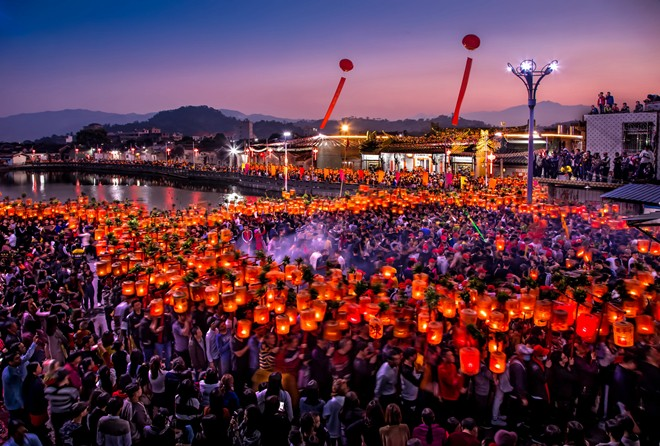
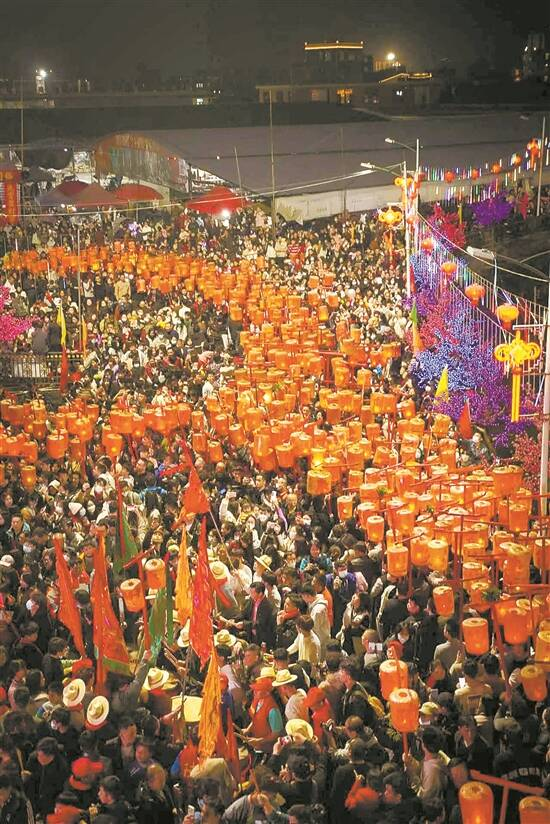
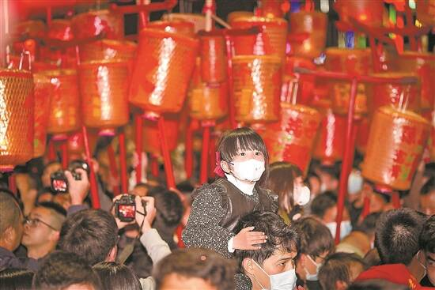
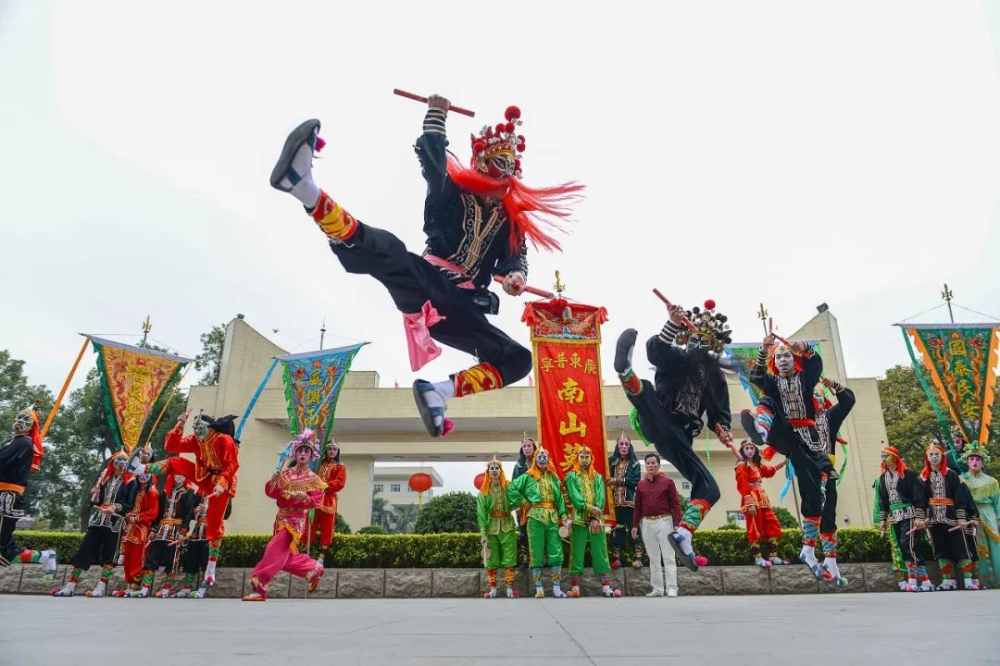
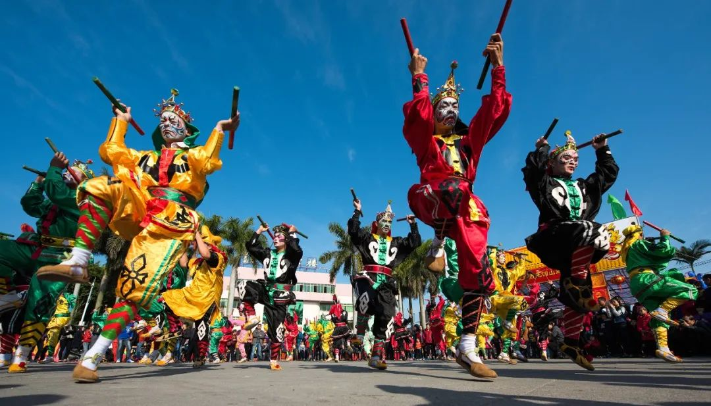
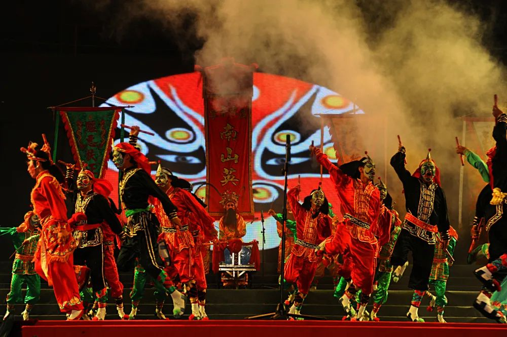
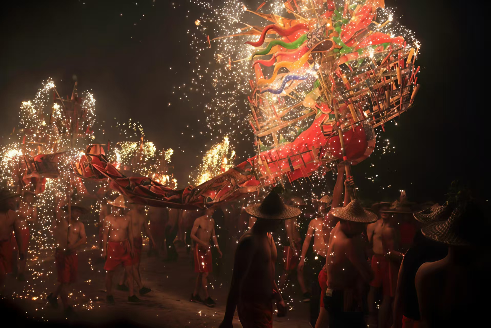

普宁的元宵

普宁元宵节以正月十五为核心，并延伸至正月十四、十六，核心是潮汕特色的 “营老爷”（游神）体系，融合火俗、灯俗与非遗展演，各村活动差异化显著，热闹非凡。
图片来源于：中国新闻网，如有侵权请联系删除
营老爷

2月4日（正月十四）夜幕降临时，在普宁市大长陇村，随着一声声锣鼓声响，万千村民从四面八方汇聚在村里的东门埕，手持灯笼，灯笼上写着“千子万孙”“囍”等喜庆字样，祈求人丁兴旺、国泰民安，大家围绕着大锣鼓与彩旗表演游灯，村民欢天喜地，现场热闹非凡。

每年正月十四、十五夜，大长陇村“贺灯”如期举行，已成为当地社会生活、群众生活密不可分的一部分，每到“贺灯”之日，大长陇子孙都会汇聚村中，即使身在异地也会回乡参加活动，大长陇贺灯又是联结乡情乡谊，凝聚侨心民心，增进乡邻、邻里、侨胞和睦团结的重要纽带，在构建和谐社会中发挥着重要作用。
图片来源于：羊城晚报，如有侵权请联系删除
英歌舞

每逢新春、元宵等佳节或重大喜庆之日，英歌锣鼓声响遍城乡村寨，所到之处，男女老幼闻声而至，人声鼎沸，热闹非凡。刻画着独特脸谱的舞者从古村街巷奔涌而出，手执短棍叩击起舞的“梁山好汉”们腾跃而来，响彻苍穹的锣鼓声由远及近……舞！舞！舞！排山倒海般的气势，肆意喷涌的情感，狂野奔放，快意宣泄，无论是舞者还是观者，仿佛都被一种崇高和荣耀笼罩着，感受着撼人心魄的力与美……
这就是普宁英歌，以威武雄壮、豪放粗犷、刚劲雄浑闻名遐迩，融舞蹈艺术、南拳套路、戏曲演技于一体，表演场面恢宏、阵势多样、套路多变、声震寰宇，气势磅礴，获得“北有安塞腰鼓，南有普宁英歌”之美誉。

普宁英歌分快板、中板、慢板三种流派，有鲜明的民间文化特色，尤其是英歌脸谱、服饰、道具，蕴含了潮汕文化和京剧艺术的精华，在众多的地方特色文化中独树一帜。其内容取材于《水浒传》“元宵节大闹大名府”的故事，讲述正当元宵节大放花灯的时候，一群梁山好汉斗智斗勇把卢俊义等人从狱中劫出的故事。

图片来源于：广东省普宁市人民政府门户网站，如有侵权请联系删除
其他活动

元宵之夜的广东普宁，烟花是民俗狂欢的压轴华章，与贺灯、营老爷、英歌 舞相融，绘就潮汕平原最炽热的元宵盛景。夜幕低垂，祠堂前、村道上、巡游终点，烟花次第升空。先是单发礼炮划破静谧，紧接着连片绽放，金红、银蓝、翠紫的花火倾泻而下，火树银花照亮飞檐翘角的宗祠，映红万人攒动的街巷。在大长陇等村落，万盏红灯巡游成火龙，烟花腾空时与灯海交辉，漫天璀璨与地上流光相映，震撼至极。烟花声里，英歌锣鼓铿锵作响，抬着神轿的乡民高喊“老爷保贺”，跳火堆、贺添丁的民俗轮番上演，爆竹与烟花交织的声响，是普宁人对合境平安、风调雨顺、人丁兴旺的虔诚祈愿。海外乡贤归乡齐聚，孩童欢呼雀跃，烟火气与民俗情在此刻交融。这漫天华彩，不止是节庆的绚烂，更是普宁传承百年的宗族情怀与乡土眷恋，是刻在潮汕人骨子里的团圆与欢庆。
图片来源于：东方IC网，如有侵权请联系删除